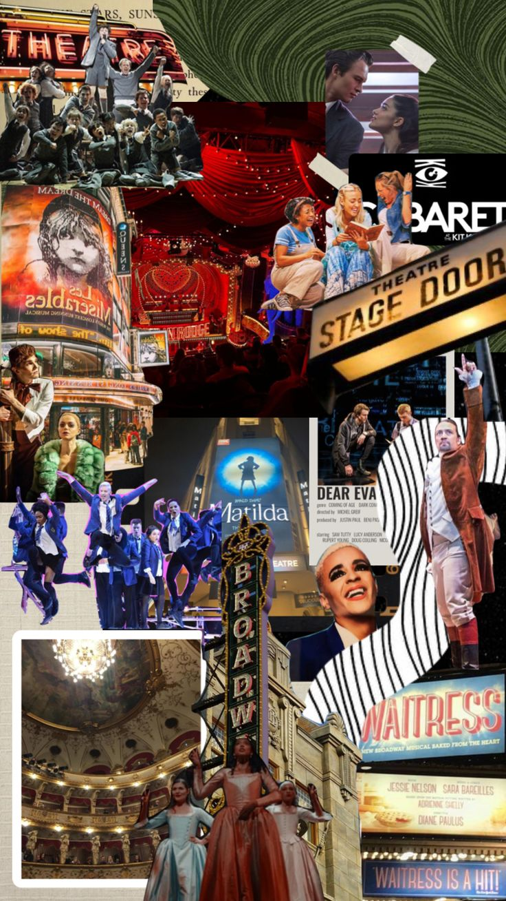

Assorted Miscalanious Stuff (I Am Very Unorganized)

- I feel pretty.
- Referencing a song of the same name from West Side Story
- If I took a meat cleaver down the center of your skull, I'd have matching halves, that's very important.
- A line from Heathers said during the song "Beautiful" that I just find funny
- The Phantom of the Opera is here.
- A lyric from The Phantom of the Opera that I enjoy singing, especially when it can be used to talk about anything seemingly supernatural
Home
Secret Extra Fun Time